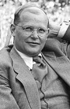

II. Dünya Savaşı’ndaki Müttefik zaferinden bir ay önce, yenileceklerini anlayan Naziler ülke içindeki düşmanlarına karşı kanlı bir kıyıma giriştiler. Bu katliamın kurbanlarından biri de otuz dokuz yaşındaki Protestan bir rahipti. İşkence görmüş ve Flossenbürg toplama kampında 9 Nisan 1945 günü şafak sökerken asılmıştı.

Bu rahibin adı Dietrich Bonhoeffer’di (1906–1945). 3. Reich’e karşı çıkabilecek kadar cesur olan az sayıdaki din adamından biri olduğu için savaş sonrası dönemde alkışlanacaktı. Bonhoeffer Wroclaw’ın önde gelen ailelerinden birinin çocuğuydu. Bu şehir günümüzde Polonya’da yer almaktadır. Bonhoeffer I. Dünya Savaşı’nda savaşmak için çok genç olmasına rağmen savaşın getirdiği yıkıma şahit oldu. Ağabeyi Walter’ın ölümüye derin bir üzüntü yaşadı.
1927 yılında doktorasını tamamladıktan sonra İspanya, İngiltere ve ABD’ye gitti. Protestan teolojisi ile ilgili beğenilen kitaplar yazdı. 1931 yılında Almanya’ya dönünce resmen rahip oldu. 1933 yılında Berlin’de yaşıyordu. Bu sırada Naziler iktidarı ele geçirip Protestan ve Katolik kiliseleri üzerinde baskı uygulamaya başladılar. Baskılar sonucunda Alman Protestan Kilisesi, Protestan Reich Kilisesi adını almak zorunda kaldı. Bonhoeffer ise “İtiraf Kilisesi”nin (Confessing Church) kuruluşuna katkıda bulundu. Bu kilisenin mensupları Hıristiyanlığın Nazizmle bağdaşamadığını savunuyordu. Aynı zamanda anti semitik Nazi propagandasına da karşıydılar.
1930’larda Gestapo, Bonhoeffer’in kilisesini kapattı. Savaş yaklaşınca ABD’ye gitti. Fakat direnişe katılmak için tekrar Almanya’ya döndü. Bu dönemde halkı ile birlikte olmazsa savaş sonrasında Hıristiyanlığın yeniden kuruluşunda söz hakkı olmayacağına inanıyordu.
1943 yılında tutuklandı. Yahudilerin Almanya’dan kaçmalarına yardım ederken yakalanmıştı. Hitler’e başarısız bir suikast girişiminde bulunulan 20 Temmuz 1944 tarihinde hapiste olmasına rağmen komploya dahil olmakla itham edildi. Diğer komplocularla birlikte Flossenbürg’de idam edilidi. On bir gün sonra Müttefikler kampı kurtardılar. Bir ay sonra savaş bitti.
Ek Bilgiler
1- Bonhoeffer’in ailesinden dört kişi daha komploya dahil oldukları iddiasıyla idam edildi. Bunların arasında erkek kardeşi Klaus ve iki kayınbiraderi de vardı.
2- Pasifist bir teolog olan Bonhoeffer’in suikast komplosuna katılmak için epey düşünmesi gerekmişti. 1943 tarihli “Ethics” (Ahlak) kitabında onu bu seçimi yapmaya yönelten düşüncelerini şöyle açıklar: “Hıristiyanlar bir ikilem ile karşı karşıyalar. Şeytan saldırıya geçince ona karşı doğrudan eyleme geçmeleri gerekir. Başka seçenekleri yoktur. Harekete geçmemek şeytanı göz ardı etmek demektir.”
3- Londra’daki Westminster Manastırı’na Bonhoeffer’in heykeli dikilmiştir. Alman rahip Hıristiyanlığın modern bir şehidi olarak görülmektedir.